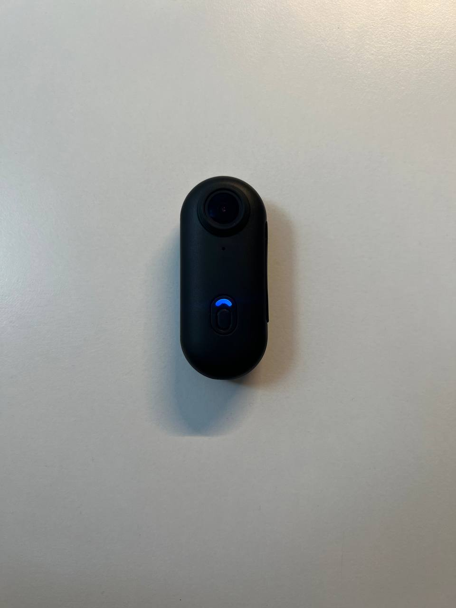

Инструкция по эксплуатации clip & go
🔌 Включение
Зажмите основную кнопку на 4 секунды. Когда индикатор начнёт мигать синим и почувствуется лёгкая вибрация — камера включена.

💾 Установка microSD
Откройте боковую резиновую заглушку, вставьте карту (FAT32, до 256 ГБ) до щелчка. Индикатор загорится постоянным синим светом.

🎥 Съёмка
Убедитесь, что индикатор горит синим.
Запись видео: один клик — индикатор мигает.
Остановка: ещё один клик.
Фото: переключитесь кнопкой Mode + клик «затвор».
4K (3840 × 2160), до 180 мин записи. Чтобы выключить — зажмите кнопку 4 сек.

📱 Выгрузка на телефон
- Установите приложение Viidure.
- Включите камеру и дважды быстро нажмите кнопку — индикатор замигает сине-зелёным.
- Подключитесь к Wi-Fi сети
H88-dc8403233f26, пароль12345678. - Откройте Viidure и скачивайте файлы.

💻 Выгрузка на ПК
- Извлеките microSD и вставьте в картридер.
- Подключите к USB-порту компьютера.
- Скопируйте файлы из папки
DCIM.

✅ Приятного использования!
Камера готова к работе. Наслаждайтесь съёмкой и легко загружайте материалы!